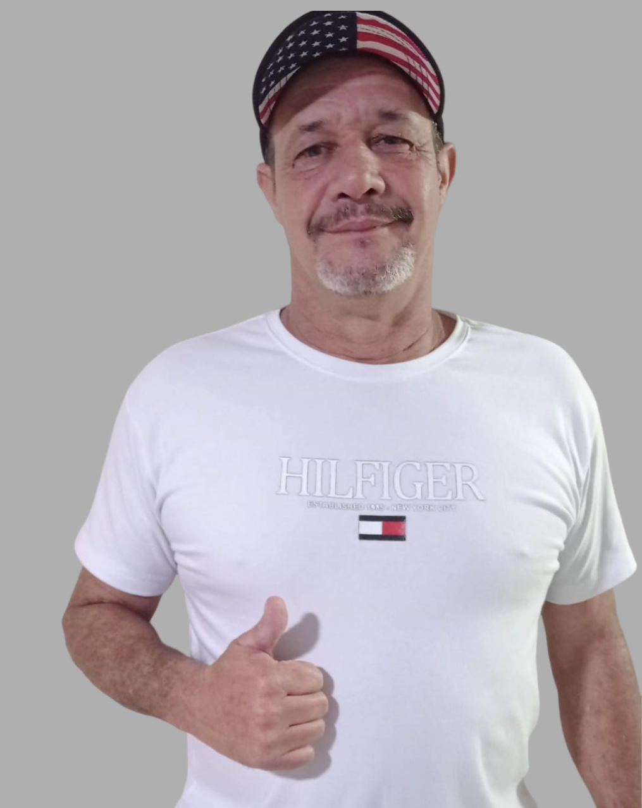

Adriano (Naninho)
Presidente
“O que começou com poucas crianças foi crescendo e virou uma rede de cuidado, confiança e oportunidade para muitas famílias.”

União e diversidade
Um projeto social que usa esporte, cuidado e comunidade para abrir caminhos melhores.
Navegue pelo projeto
Relatos

Presidente
“O que começou com poucas crianças foi crescendo e virou uma rede de cuidado, confiança e oportunidade para muitas famílias.”
Ex-aluno
“A associação trouxe segurança, confiança, aprendizado e momentos de alegria para todos nós.”